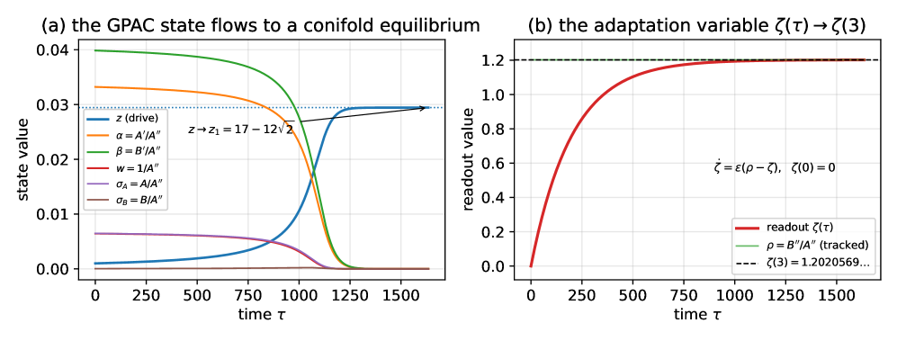

Builds a large Lean 4/Mathlib framework, written mostly by AI agents, formalizing CRN computability, population-protocol majority algorithms, Kurtz's theorem, and Turing-completeness results.
Abstract
We present Ripple, an open, AI-formalized Lean 4 framework for the mathematics of computing with chemical reaction networks (CRNs) – one extensible, machine-checked development that gathers several strands of the field into a single setting, and is built to grow. It formalizes: the theory of which real numbers a CRN can compute – a single Lean definition of real-time CRN computation, the class of reals it captures, and the compilation pipeline (a GPAC / polynomial-ODE layer, a dual-rail compiler, and four stages down to large-population protocols) that realizes them, built so that adding a new number is a plug-in; three landmark population-protocol majority algorithms – approximate, exact, and self-stabilizing exact majority; the stochastic-to-deterministic bridge, through three machine-checked versions of Kurtz's mean-field theorem; and two classical Turing-completeness results – Bournez–Graca–Pouly for the deterministic GPAC and Soloveichik–Cook–Winfree–Bruck for stochastic CRNs. Each of these is verified to depend on exactly the three Mathlib foundational axioms, with no sorry. Along the way the formalization repaired genuine, previously unnoticed gaps in published proofs – a compilation step that can transiently leave the unit interval, and an algebraic-number construction that silently rests on Catalan's conjecture – and surfaced a sharp open problem about when a holonomic series admits an exact, rational-data polynomial-ODE encoding. The whole development is open and every proof is kernel-checked, so the results can be independently re-verified; and because it was written predominantly by AI agents using only publicly available models, the workflow that produced it can be reproduced with the same public toolchain.
Problem
The mathematics of computing with chemical reaction networks (CRNs) is spread across many papers with layered, intricate proofs. These include CRN-computable reals, population-protocol majority algorithms, mean-field limits and Turing-completeness. Informal proofs in this area may contain unnoticed gaps.
Approach
Ripple is an open Lean 4 development, about 920 files and 768k lines, written predominantly by AI agents using publicly available models. It formalizes three groups of results: (1) a single definition of CRN real-time computation together with a compilation pipeline (GPAC/PIVP, dual-rail, large-population protocols); (2) approximate, exact and self-stabilizing exact majority protocols; (3) three versions of Kurtz's mean-field theorem plus the Bournez–Graça–Pouly and Soloveichik–Cook–Winfree–Bruck Turing-completeness theorems. Every headline theorem is checked to depend only on the three standard Mathlib axioms, with no sorry.
Results
The formalization exposed gaps in published proofs, each with a fix carried in the Lean development. The central-region drift inequality in Angluin–Aspnes–Eisenstat approximate majority is false, with an explicit n=4 counterexample. A large-population-protocol construction's certified output can transiently leave [0,1]. An algebraic-number construction implicitly relies on Catalan's conjecture. The work also surfaces an open problem on exact rational-data polynomial-ODE encodings of holonomic series, illustrated by the ζ(3) and Ramanujan π constructions.

Figure 2: The \zeta(3) GPAC as an ODE system — the bounded eight-variable polynomial PIVP of § 7.4 , integrated (DOP853) from rational data at z_{0}=10^{-3} . (a) the projective state flows to a conifold equilibrium: the drive z relaxes to z_{1}=17-12\sqrt{2} while the bounded coordinates \alpha=A^{\prime}/A^{\prime\prime} , \beta=B^{\prime}/A^{\prime\prime} , w=1/A^{\prime\prime} , \sigma_{A}=A/A
Pillar
Files / lines / defs
Formalizes
PopulationProtocol/
435 / 303k / 8.3k
exact, approximate, self-stabilizing majority
BoundedUniv./
214 / 161k / 3.6k
GPAC Turing completeness (BGP)
LPP/
43 / 95k / 2.1k
large-population protocols, compilation stages
sCRNUniv./
92 / 45k / 3.4k
stochastic CRN Turing completeness
Total
~920 / ~768k / ~23.4k
Selected pillars of the Ripple repository (files / lines / defs)